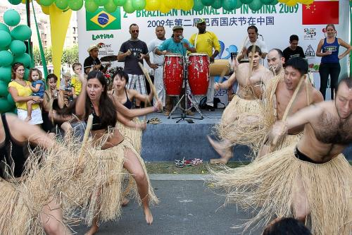

Капоэйра в Китае
Капоэйра в Китае есть. Её ещё очень мало, она не так известна в широких кругах, она не считается чем-то “крутым” и популярным среди местной молодёжи, здесь не проводятся ежемесячные семинары бразильских местре и даже нет школы “Abadá Capoeira”.
Прежде чем говорить о капоэйре в Китае, нужно хорошо понять местный контекст, китайскую культуру и менталитет. Я живу в Китае с 1999 года и постигаю Дао, “великий китайский путь”, уже более половины своей жизни.
Капоэйра по-китайски имеет несколько названий. Самое распространённое и понятное китайцам — 巴西战舞 (baxizhanwu, ба си чжань у), буквально «бразильский боевой танец». Сами китайские капоэйристы предпочитают говорить созвучное и без особой смысловой нагрузки 卡波耶拉 (ka bo ye la, ка бо е ла).
Капоэйра — это чужеродное существо для китайской культуры. Традиции роды, взаимоотношение капоэйристов и их взгляды на жизнь, “малисия” и “мандинга” — это полная противоположность китайским обычаям и иерархии. Поэтому неудивительно, что капоэйрой здесь занимаются либо иностранцы, либо “люди-бананы” 1, или же белые вороны и аутсайдеры китайского сообщества.
Также неудивителен и тот факт, что капоэйра пришла в Поднебесную из более открытых и независимых территорий: из Гонконга (a.k.a. Сянган) и Тайваня (провинция Китая, хотя жителей острова убедить в этом пока не удалось).
Откуда эта афро-бразильская забава пришла на Тайвань и Гонконг неизвестно, но можно предположить два варианта:
Вариант первый: из Японии. Народы обеих территорий (да и вообще китайцы) люто бешено ненавидят японцев за их маленький рост, узкие глаза, зверства военного времени и завидуют их прогрессивности в науке; одновременно китайцы почти приклоняются перед японскими умами (хотя этого никогда не признают), активно копируют научные и культурные находки. Так дела обстоят с модой, музыкой, танцами и другой творческой деятельностью человека. Что было популярно в Японии 20, 10, 5 лет назад — становится популярно на Тайване и Гонконге, а затем приходит в большой Китай. Таким же образом могла прийти и капоэйра, которая пользуется дикой популярностью в Стране Восходящего Солнца.
Второй вариант: из-за бугра. Что Тайвань, что Гонконг — это место паломничества белых воротничков и специалистов из Штатов и Европы. Экспаты помогают строить азиатскую экономику с незапамятных времён, получая неплохие деньги и условия жизни. Их здесь много, они здесь давно, так что неудивительно, что жизнь экспат-сообщества также очень богата. Иностранцы привезли сюда гольф, регби, кёрлинг и флорентийское кальчо, открыли свои клубы по увлечениям и спортивные секции, совмещая иногда офисную работу с тренерской. Кто знает, может и капоэйру сюда привёз какой-нибудь топ-менеджер?

В любом случае, речь в этой статье о капоэйре в Китае, а Тайвань и Гонконг — это ненастоящий Китай и тема для отдельной статьи. Но ради справедливости перечислим действующие группы на этих спец.территориях КНР:
Тайвань
- ASSOCIAÇÃO DE CAPOEIRA CAPOARTE (facebook, http://capoartemestrecurio.spaces.live.com/)
- Axé Capoeira (адрес, статья про них, блог)
- Так же в 2007 году на тайваньском телеканале вышла передача с известной телеведущей, топ-моделью Линь Чжилин про капоэйру. В передаче участвует Instrutora Chris, которая числится и в Capoarte и в Grupo Taiwan Capoeira:
Grupo Taiwan Capoeira (сайт, facebook)
Гонконг
- Grupo Capoeira Brasil Hong Kong (http://www.capoeira.hk/) под руководством Instrutor Chumbinho (из Австралии), который проводил один мастер-класс в Пекине.
- Axé Capoeira (адреса групп, сайт №1, сайт №2) тут сразу несколько групп, которые ведут Instrutor Indio, Professor Berimbau и Mestre Eddy Murphy
- CENTRO CULTURAL EQUIPE JÔ CAPOEIRA (сайт, блог) под руководством C.Mestre Jô, которая участвовала во втором Всекитайском ежегодном батизаду в Шанхае, в 2009 году.
Так как недалеко от Гонконга расположены города Макао (Аомынь) и Шэньчжэнь, то гонконгские учителя иногда устраивают здесь мастер-классы.
Также на Тайване и в Гонконге существует куча мелкий “секций”, которые преподают “капоэйру” в спорт-залах, как новую нано-технику похудения или танцы.
Конец первой части. Во второй части поговорим наконец-таки о капоэйре в континентальном Китае, Всекитайском ежегодном батизаду, группах в Пекине и в Шанхае, коммерциализации капоэйре и её будущем в Поднебесной.
Примечания:
- 香蕉人, “banana people” — жёлтые снаружи, белые внутри; по отношению к азиатам родившимся на Западе и/или, которые воспитаны в европейском ключе